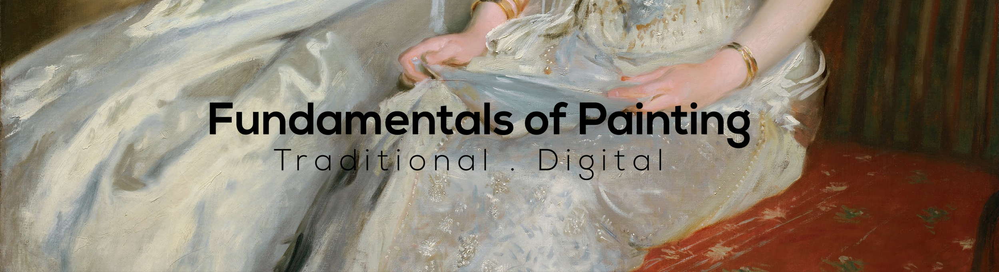

Home¶

This website contains lessons on painting, resources etc. On the left and below you can browse through various topics.
Contents:
About¶
Fundamentals of Painting is created and maintained by Hac Hai Pham.
This website contains lessons on painting, resources etc. On the left and below you can browse through various topics.
Contents:
Fundamentals of Painting is created and maintained by Hac Hai Pham.